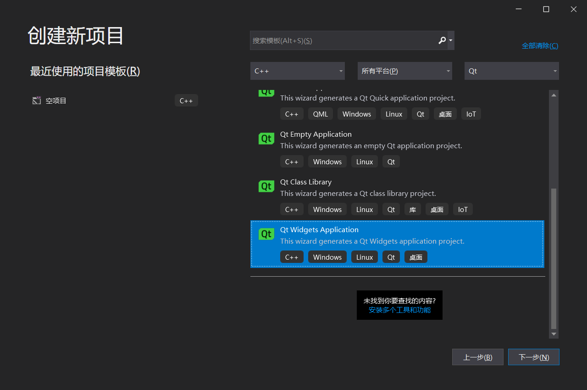
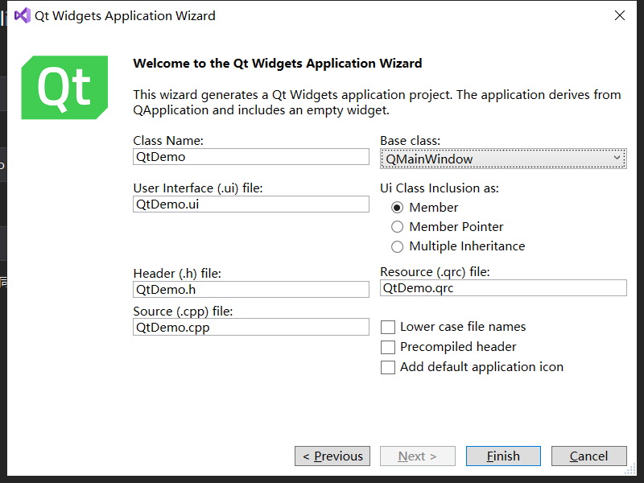
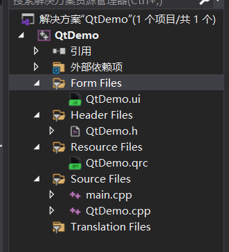
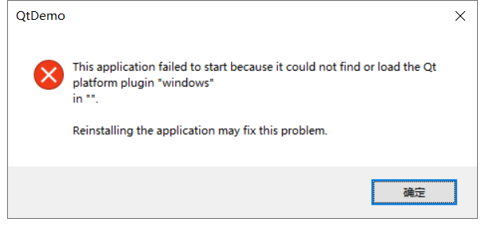
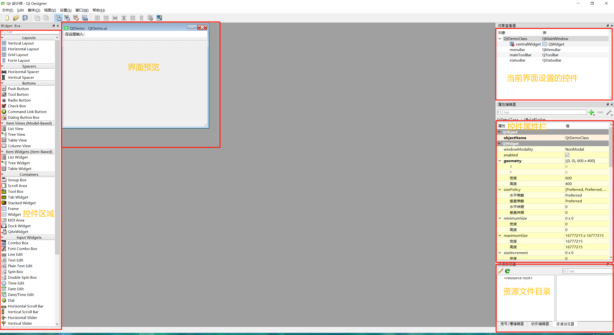

Qt系列（一）——初识界面
前言
如果使用的是Visual Studio编程的话，注意除了安装qt外还需要装一个Qt Vs Tools这个插件，这一系列使用的都是通过vs来做qt的开发，当然对于QCreator来说并没有太大区别，除了工程配置外，其他东西基本类似
新建工程
如图所示，新建一个Qt Widgets Application，这是创建一个默认的常规型窗口工程，当然熟悉qt的可以直接创建一个empty来自己去创建需要的window或widget之类的工程。

在选择窗体这地方，可以选择MainWindow/Widget/Dialog，这里选择MainWindow，有关这三个的区别，大致上MainWindow顾名思义就是主窗口，可以包含菜单、工具栏、状态条的主窗口，Dialog是对话框的基类，Widget是所有界面对象的基类。
在选择窗体这个地方，留意下选择MainWindow下方的Ui Class Inclusion as，这里有三个选项，默认是==Member==，最好是选择==Member Pointer==，创建工程后默认析构函数会删除ui这个指针对象释放内存。

目录介绍

这里注意我这是英文，可能有些的生成直接是中文的筛选器(Folder)
- Form Files 存放*.ui界面文件
- Header Files 存放c++的.h等头文件
- Resource Files 存放.qrc等资源文件
- Source Files 存放c++的.cpp等源文件
编译运行
不出意外的话是有下面的提示，一般安装qt如果没有配置环境变量之类的话（比如说我从其他地方拷了一份qt的release库），在可执行程序目录需要将qt目录下的platform拷过来，为了节省本身大小可以只拷platform下的qwindows.dll，但是目录还是要保持一致的。

一般这时候就能正常打开一个只有标题栏的窗体，我们来看下.ui的内容。

小结
大致了解Qt的创建工程之后，下来就开始一步步使用Qt的控件、事件、封装的库来一步步尝试吧。
本博客所有文章除特别声明外，均采用 CC BY-SA 4.0 协议 ，转载请注明出处！